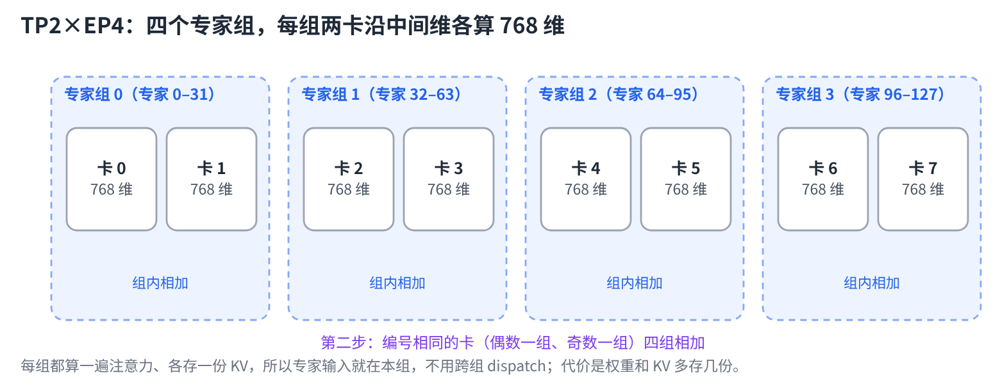
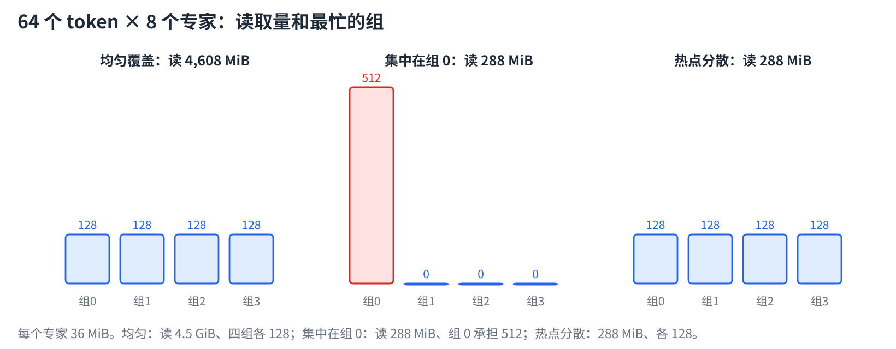
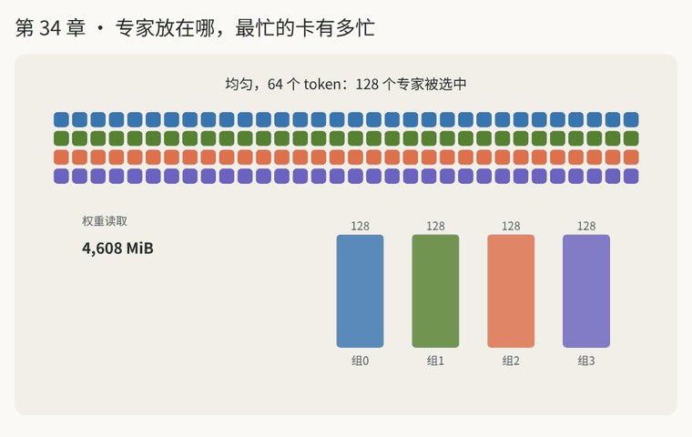

第 34 章 · 组合并行与模型规模：坐标、复用与最忙的那一组
本地运行
git clone https://github.com/wikieden/ai-infra-from-constraints
cd ai-infra-from-constraints/code/notebooks
pip install jupyterlab torch numpy
jupyter lab ch34_combined_parallel.ipynb也可以下载后直接用 VS Code 打开 .ipynb 运行。需要 GPU 的章节在 Colab 里选「代码执行程序 → 更改运行时类型 → GPU」。
本章回答：几种并行叠在一起时，怎么说清每张卡存什么、和谁通信？TP2×EP4 的布局每 token 要发多少字节？同样 512 次专家分派，权重读取为什么能差 16 倍，最忙的卡又为什么能差 4 倍？模型到万亿参数，组合怎么变？
讲解日期：2026-11-24 · 上一章：第 33 章 上下文、流水线、专家并行 · 下一章：第 35 章 集合通信的实现与代价
对应原文：materials/ai-infra-book/manuscripts/06-超节点.md§6.3 L360–L462（式 6-8，图 6-17 到 6-22）
本章缩写：KDA = Kimi Delta Attention（Kimi 的线性注意力，用固定大小的矩阵递推）· MLA = Multi-head Latent Attention（多头 / 潜在 / 注意力）· skew = 负载偏斜。全部缩写见 缩写与术语表
讲解
第一步：先给每张卡标坐标（2026-11-24）
类比：公司组织架构。 一个人的工号写成"部门 2、小组 1"，就知道他做哪类活、和谁开组会。
原文 L366–L372：DP2×PP2×TP4 占 \(2 \times 2 \times 4 = 16\) 张卡；TP4 组内再开 SP，卡数不变。组合时要写清：每个算子的输入、权重、输出分片，以及哪组卡通信。
TP2×EP4（八卡跑 Qwen3-235B-A22B）：128 个专家分成 4 组，每组 32 个；组内两卡沿专家中间维各算 768 维。卡的坐标 =（专家组，组内 TP 编号）。
| 专家组 | 卡 | 专家 | 每卡中间维 |
|---|---|---|---|
| 0 | 0、1 | 0–31 | 768 |
| 1 | 2、3 | 32–63 | 768 |
| 2 | 4、5 | 64–95 | 768 |
| 3 | 6、7 | 96–127 | 768 |
这里每个组都算一遍注意力、各存一份 KV：于是每组本地就有完整的专家输入，省掉跨组 dispatch。代价：每卡权重约 64.8 GB（八卡共 518.6 GB，比只存一份多约 48 GB），8192 token 时每卡 KV 752 MiB，是实际 KV 的四倍。

图 34-1 · 同一列的注意力头与 KV 重复四份。
一句话：先写坐标，再写每个算子的分片和通信组；复制注意力能省 dispatch，代价是权重和 KV 多存几份。
第二步：两步汇合，每 token 发 56 KiB（2026-11-24）
类比：先小组内对账，再各部门对账。 小组两个人先把各自那半合起来；四个部门再把各自的小计合起来。
原文 L385–L401：组内两卡各算中间维一半 → 组内相加；四组的贡献 → 再相加（发生在编号相同的卡之间：偶数卡一组、奇数卡一组）。每层三次汇合：注意力组内、专家组内、四组之间。FP32 归约，一个 token 的完整向量 16 KiB；环形 AllReduce 每卡发 \(2(n-1)/n\) 倍：
八卡合计 448 KiB；8192 token 的 prefill 每卡 448 MiB。
一句话：两层归约，2 卡组发 1 倍、4 卡组发 1.5 倍；每层三次汇合共 56 KiB。
第三步：批内复用 vs 最忙的那一组（2026-11-24）
类比：图书馆借书。 64 个人都借同 8 本书，只要从书库取 8 本（复用）；可那 8 本都在同一个柜台，那个柜台排长队（负载不均）。把这 8 本分到四个柜台，取书一样少，排队也短。
原文 L405–L429：64 个 token × 8 个专家 = 512 次分派，每个被选中专家的权重批内读一次：
| 分派 | 权重读取 | 四个 EP 组的任务数 |
|---|---|---|
| 均匀覆盖 128 个专家（各 4 个 token） | 4.5 GiB | 128 / 128 / 128 / 128 |
| 全选同 8 个专家，都在组 0 | 288 MiB | 512 / 0 / 0 / 0 |
| 同 8 个专家，分散到四组 | 288 MiB | 128 / 128 / 128 / 128 |

图 34-2 · 后两种读同样多的权重，但最忙的组差 4 倍。
decode 的小矩阵多受权重读取限制，prefill 的大矩阵多受最忙组的计算限制。把热点专家分散到不同组，同时保住复用和均衡。
随机路由的期望（原文 L431–L437，式 6-8）：每专家被一个 token 跳过的概率 \(1 - k/E\)，被整批跳过 \((1 - k/E)^m\)：
\(E = 128, k = 8\)：\(m = 8\) 约 52 个（1.8 GiB），\(m = 64\) 约 126 个，几乎全选中。之后再加 token，主要是提高每份权重的复用。真实路由并不均匀（DeepSeek V4-Flash 的记录覆盖 131 万次选择），要用实测分布算各卡负载（第 9 部分的 skew 模型）。
一句话：活跃专家越少读得越少；但它们在哪张卡，决定最忙的卡有多忙。
第四步：万亿参数时组合怎么变（2026-11-24）
类比：家具越来越多。 一个房间放不下就加房间（更多 EP 组、更多 PP 阶段），一件太大就拆开放（专家内 TP）；搬运时先压缩再搬（先投影再发送）。
原文 L443–L449：
| 模型 | 参数 | 权重（存储格式） |
|---|---|---|
| Qwen3-235B-A22B | 235B | BF16 约 470 GB |
| DeepSeek V4-Flash | 284B | BF16 约 568 GB；256 个路由专家选 6 个 + 共享专家 |
| DeepSeek V4-Pro | 1.6T | 每参数半字节也要约 800 GB |
| Kimi K3 | 2.8T | 约 1.4 TB；896 个专家选 16 个 |
都超过一台 HGX H100 的 640 GB。增加 EP 组把专家分到更多卡、专家内 TP 缩小每卡的专家矩阵、PP 减少每阶段的层数。发送的维度也是设计：Kimi K3 路由专家在 3584 维潜空间工作，主干是 7168 维，先投影再发送 BF16 向量从 14 KiB 降到 7 KiB。
一句话：权重多了决定至少要多少资源；计算图怎么长决定这些资源之间要传什么。
动画演示：专家放在哪，最忙的卡有多忙

可交互版：animations/34-combined-parallel.html（切换：均匀 / 集中在一组 / 分散到四组 / 随机；滑块：token 数 1–256）。
怎么看：
- 上面 128 个小格是专家，按四个 EP 组着色，被选中的点亮（第三步）；
- 左下是权重读取量（被选中专家数 × 36 MiB）；
- 右下四根柱是四个组的任务数，最高的标红；
- 播放时：均匀 → 集中在组 0 → 分散到四组 → 随机路由 64 个 token（期望约 126 个专家）。
练习与作答记录
题 1（第二步）：把布局改成 TP4×EP2（两个专家组，每组四卡）。每层三次汇合每 token 每卡发多少 KiB（FP32、隐藏 4096）？
作答记录：（待作答）
题 2（第三步）：32 个 token 各选 8 个专家，\(E = 128\)。随机路由时期望有多少个活跃专家？权重读取约多少 GiB？
作答记录：（待作答）
题 3（第三步）：256 次分派全落在 16 个专家上，每专家 16 次。这 16 个专家在四个 EP 组里按 10、2、2、2 分布，最忙组的任务数是多少？改成 4、4、4、4 呢？
作答记录：（待作答）
原书实验 6-3（L451：8192 / 16384 上下文时 TP2×EP4 的每卡 KV）。想多练可以做。
口诀
工号写部门和小组，就知道和谁开会；
小组先对账，部门再对账：一倍、一倍、一倍半；
借同几本书取得少，都在一个柜台排长队；分到四个柜台两头都好；
家具多了加房间，太大就拆，搬前先压缩。
本章复习卡片
I128（TP2×EP4 的坐标、复制注意力省 dispatch、每 token 56 KiB）、I129（批内复用 4.5 GiB vs 288 MiB 与最忙组 512 vs 128、式 6-8）。练习做完后，按答错、卡住的地方再补。
附录 · 延伸阅读
留给以后深入学习用，不影响本章主线。★ 是建议先读的。
推荐阅读
| 读什么 | 读哪里 | 读它为了什么 |
|---|---|---|
| ★ AII 第 6 章 | §6.3 L360–L462 | 本章原文 |
| 第 11 章 MoE | 专家复用 \(U\) | 批内复用的前置 |
| DeepSeek V4 技术报告 | 专家并行一节 | 大规模 EP 部署 |
| Kimi K3 技术报告 | 架构一节 | 潜空间专家与 KDA / MLA 混合 |
| AII 第 9 章 §9.4 | skew 模型 | 实际路由下的最忙组 |
数学原理
- 期望的线性性：活跃专家数 = 各专家"被选中"指示变量之和的期望。
- 最慢者决定：并行组的完成时间 = \(\max_g\)（组 \(g\) 的工作量 / 速率）。
公式清单
| 公式 | 意思 |
|---|---|
| 环形每卡发送 \(= 2(n-1)/n \times M\) | 2 卡 1 倍、4 卡 1.5 倍 |
| \(\mathbb{E}[E_{\mathrm{active}}] = E[1 - (1 - k/E)^m]\) | 式 (6-8) |
| 读取 = 活跃专家数 × 每专家权重 | 批内每专家读一次 |
代码对照：把本章的数字用代码算一遍
代码
ai-infra/solutions/chapter-code/ch34_combined_parallel.py，测试tests/test_ch34.py：
bash cd ai-infra/solutions/chapter-code uv run python ch34_combined_parallel.py uv run pytest tests/test_ch34.py
| 讲义 | 写法 | 跑出来 |
|---|---|---|
| 第二步 | tp2ep4_send_kib() |
56 KiB |
| 第三步 负载 | group_load(assign) |
[128]×4、[512, 0, 0, 0] |
| 第三步 期望 | expected_active(128, 8, m) |
8、51.6、125.9、128 |
代码里才看得到的 3 件事：
- 式 (6-8) 在 \(m = 8\) 时是 51.6，原文写"约 52"。
group_load假设专家 \(e\) 在第 \(e // 32\) 组：换一种放置（比如交错放）就能把集中的热点自动分散。- 读取量只算被选中的专家、每个读一次；如果 kernel 对每个 token 单独读专家权重，就没有批内复用。
自己改一改（不影响练习答案）：
- 给
group_load加一个"交错放置"（专家 \(e\) 放在组 \(e \bmod 4\)），再跑集中的那种分派。 - 用随机数模拟 64 个 token 的路由 1000 次，画出最忙组任务数的分布。
- 把
tp2ep4_send_kib改成 BF16 归约，发送量变多少？